CS184/284A Spring 2025 Homework 2 Write-Up
Names:
Link to webpage: (TODO) cs184.eecs.berkeley.edu/sp25
Link to GitHub repository: (TODO) cs184.eecs.berkeley.edu/sp25
Overview
Give a high-level overview of what you implemented in this homework. Think about what you've built as a whole. Share your thoughts on what interesting things you've learned from completing the homework.Section I: Bezier Curves and Surfaces
Part 1: Bezier curves with 1D de Casteljau subdivision
De Casteljau's algorithm is a recursive algorithm that allows us to define a smooth curve from a series of points. Given a value \(t \in [0, 1]\) and the points \(p_1, p_2, \ldots p_n \), we can draw a line between each pair of points and select new points at proportion \( t \) along each line. Each iteration of the recursion reduces the number of points by 1, and we can keep doing this until we have a single point left. If we do this for all values \(t \in [0, 1]\), we will eventually draw out a smooth curve.To implement this algorithm, I looped through pairs of points,
(cur, next). To get the point in between them, I first
calculate the vector dir = next - cur, and then calculate the
point point = cur + dir * t.
|
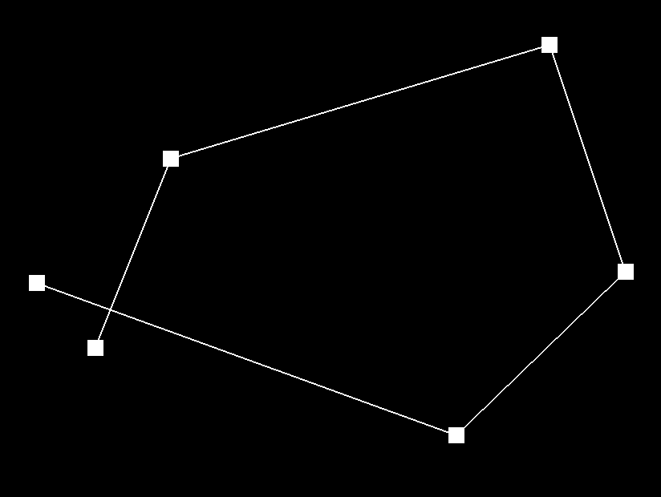 |
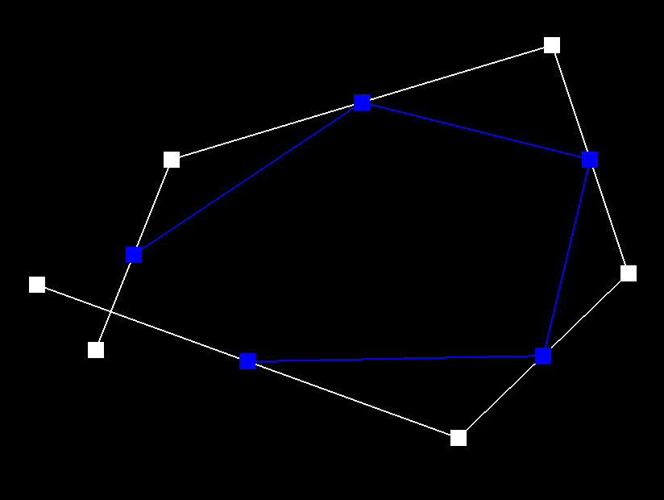 |
|
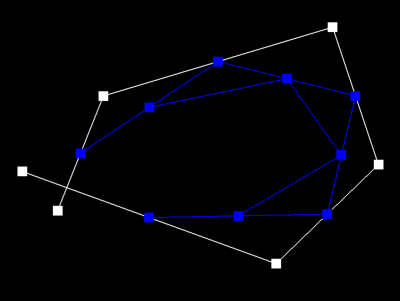 |
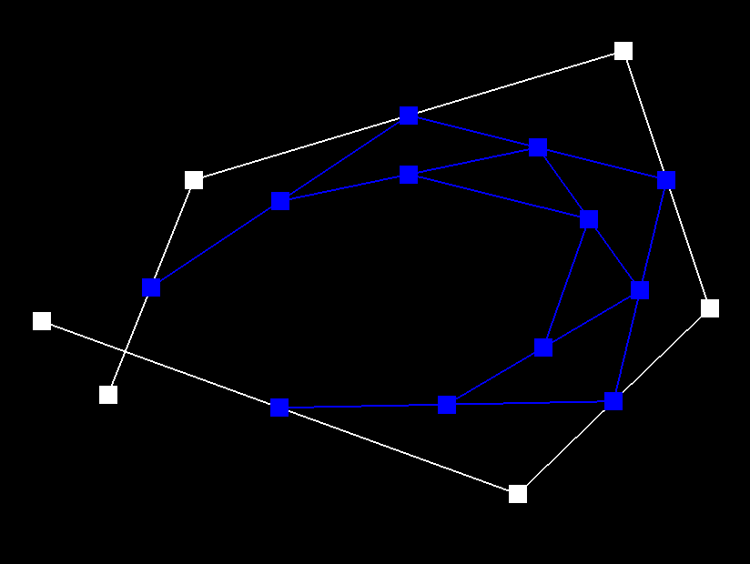 |
|
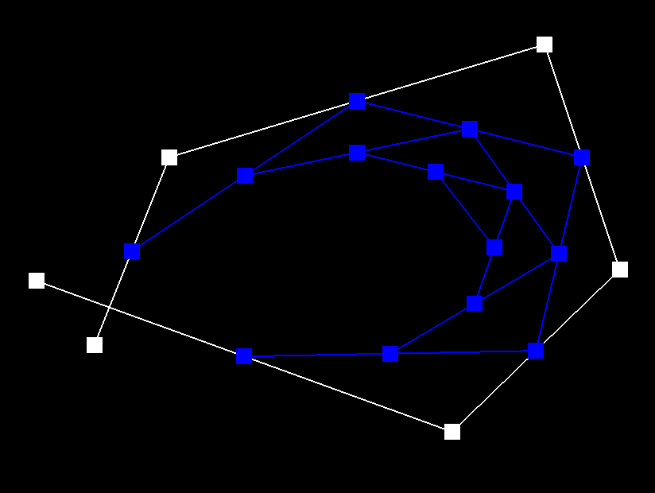 |
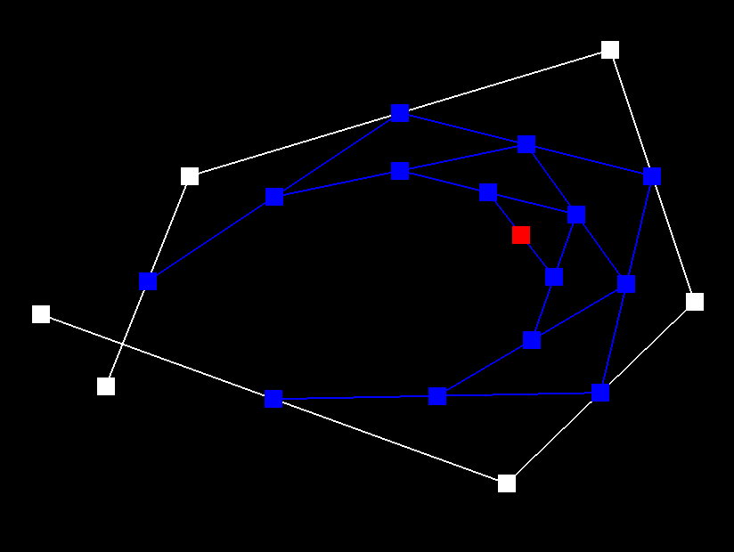 |
|
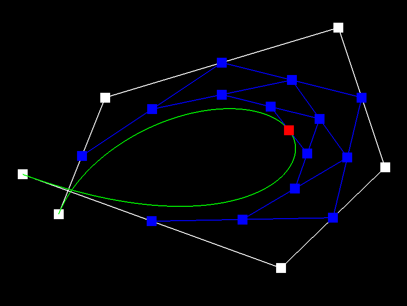 |
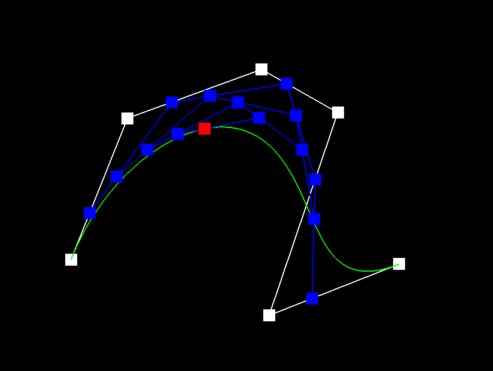 |
Part 2: Bezier surfaces with separable 1D de Casteljau
To draw a Bezier surface, we can use the same de Casteljau's algorithm as before, but with two parameters \(u\) and \(v\). Since we are in a 3D space, we think of the points as being arranged in a grid. We first recursively apply de Casteljau's algorithm to each row of the grid with parameter \(u\), transforming the grid into a single row of points. Afterwards, we can apply de Casteljau's algorithm again to this new row of points with parameter \(v\) to get a single point on the surface. If we continue to do this for all values of \(u\) and \(v\), we will eventually draw out a smooth surface.To implement this algorithm, I first filled out
evaluateStep for 3D points, which is the same as the
previous part.
Afterwards, I implemented evalute1D, which repeatedly applies evaluateStep on a list of
points until we are left with a single point.
Finally, I implemented evaluate, which takes in \(u\) and \(v\) as parameters. It first applies
evaluate1D with parameter \(u\) to each row separately, giving us a single list of points.
Afterwards, it calls evaluate1D again with parameter \(v\) on this new list of points to get a single
point on the surface.
|
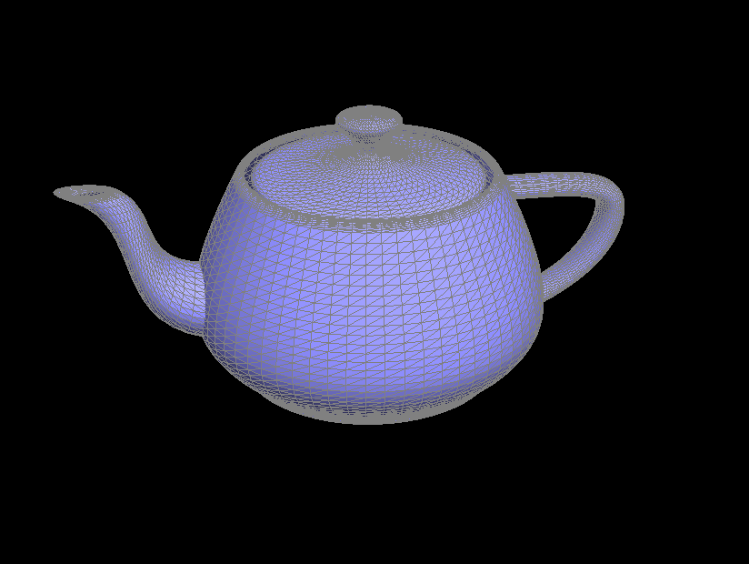 |
Section II: Triangle Meshes and Half-Edge Data Structure
Part 3: Area-weighted vertex normals
To implement the area-weighted vertex normals, I looped through each of the neighboring faces of the vertex using ado-while loop.
For each face, I got the vertices and computed the area of the triangle using the cross product between the adjacent
vertices.
If the vertices of the triangle were v1, v2, v3 in counterclockwise order, the triangle area is
cross(v1 - v0, v2 - v1) / 2.
Since we are normalizing at the end, we can just ignore the division part.
Finally, I return the normalized result.
Note that we don't need to divide by the number of faces, since the normalization will make it unnecessary.
|
|
Part 4: Edge flip
To perform edge flip, I first drew a diagram of the starting and ending state. To flip the edge, I update the two center half-edges usingsetNeighbors to assign new vertex and next
pointers.
I also need to reassign the next pointers of all the previous outer half-edges to account for the new shift.
Finally, to be safe, I reassign all the vertex and face half-edges based on the new half-edges.
I encountered a few errors with the edge flip operation, since I started it before drawing out the diagram and trying to do it mentally. I first tried to debug it for a while using the tools on the renderer, which gives the half-edges corresponding to the edge, face, or vertex. However, I ended up deciding to redo my code and draw out a full diagram of new and old states. I labeled the new and old states, then reassigned half-edges and other necessary components based on this.

|
|
Part 5: Edge split
To perform edge split, I first drew a diagram of the starting and ending state. I decided to keep the initial half-edges as the border around the "diamond" shape, and add new 3 new edges, 6 new half-edges, 2 new faces, and one new vertex to the shape.For each of the new and old half-edges, I used
setNeighbors to set the neighbors appropriately.
For each of the new edges, I used halfedge() to set the according half-edge.
For each of the new faces, I used halfedge() to set the according half-edge.
I also set the isNew flag to true for new edges and faces.
I didn't really have too many issues debugging. By fully drawing out the new and old features, I was able to code it up pretty easily.
|
|
|
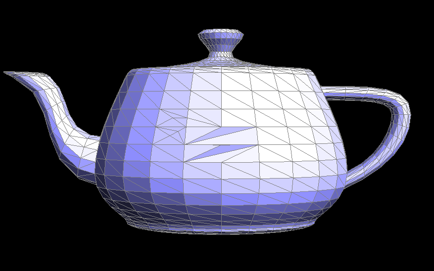 |
Part 6: Loop subdivision for mesh upsampling
To implement loop subdivision, I followed the recommended steps on implementation. First, I decided to compute new vertex positions in the input mesh, for each of the old vertices and each of the old edges. For each old vertex, I looped through its neighboring vertices and applied the following formula to compute the new vertex position: \[\text{new_pos} = (1 - n \times u) \cdot \text{old_pos} + u \cdot \sum_{i=1}^n \text{neighbor_pos}_i\] where \(n\) is the number of neighboring vertices and \(u\) is defined as \[u = \begin{cases} \frac{3}{16} & \text{if } n = 3 \\ \frac{3}{8n} & \text{if } n > 3 \end{cases}\] I stored this value intov->newPosition.
For each old edge, I computed the new vertex position using the following formula, where A and B are the endpoints of the edge, and C and D are the other two vertices of the faces that share the edge: \[ \text{new_pos} = \frac{3}{8} \cdot (\text{A} + \text{B}) + \frac{1}{8} \cdot (\text{C} + \text{D}) \] I stored this value into
e->newPosition.
After computing the new vertex positions, I stored all of the old edges into a new
vector.
Then, I looped through each of the old edges and performed an edge split on it, using the new vertex position I computed for the edge, e->newPosition.
Next, I looped through all edges, and for each new edge that connected an old and new vertex, I flipped the edge.
I used the isNew flag to determine whether a vertex or edge is new or old.
Finally, I looped through all the vertices and updated their positions to the new vertex positions I computed at the beginning.
We can see that the the cube edges have been smoothed out and the shape looks like an uneven sphere. I can pre-split some of the edges on the center of the cube faces to make it more symmetrical and more like a sphere, but it still gets smoothed out after subdividing.
Without doing any preprocessing, the cube appears asymmetric. Some of the vertices on the corners of the cube have an extra edge on the center of the face. As a result, these vertices have more neighboring vertices than the other corner vertices, giving them less weight on their original position and causing them to be pulled in more towards the center of the cube. Thus, the cube would appear to be asymmetrical.
To fix this, I can pre-process the edges on the faces of the cube by splitting them, giving each corner vertex the same number of neighboring vertices and making the cube symmetrical after subdivision.
|
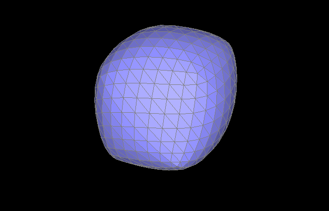 |
|
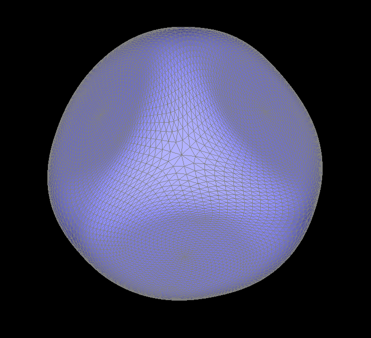 |